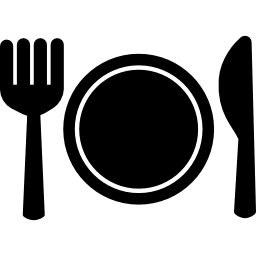
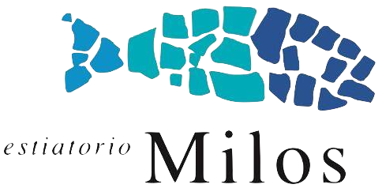
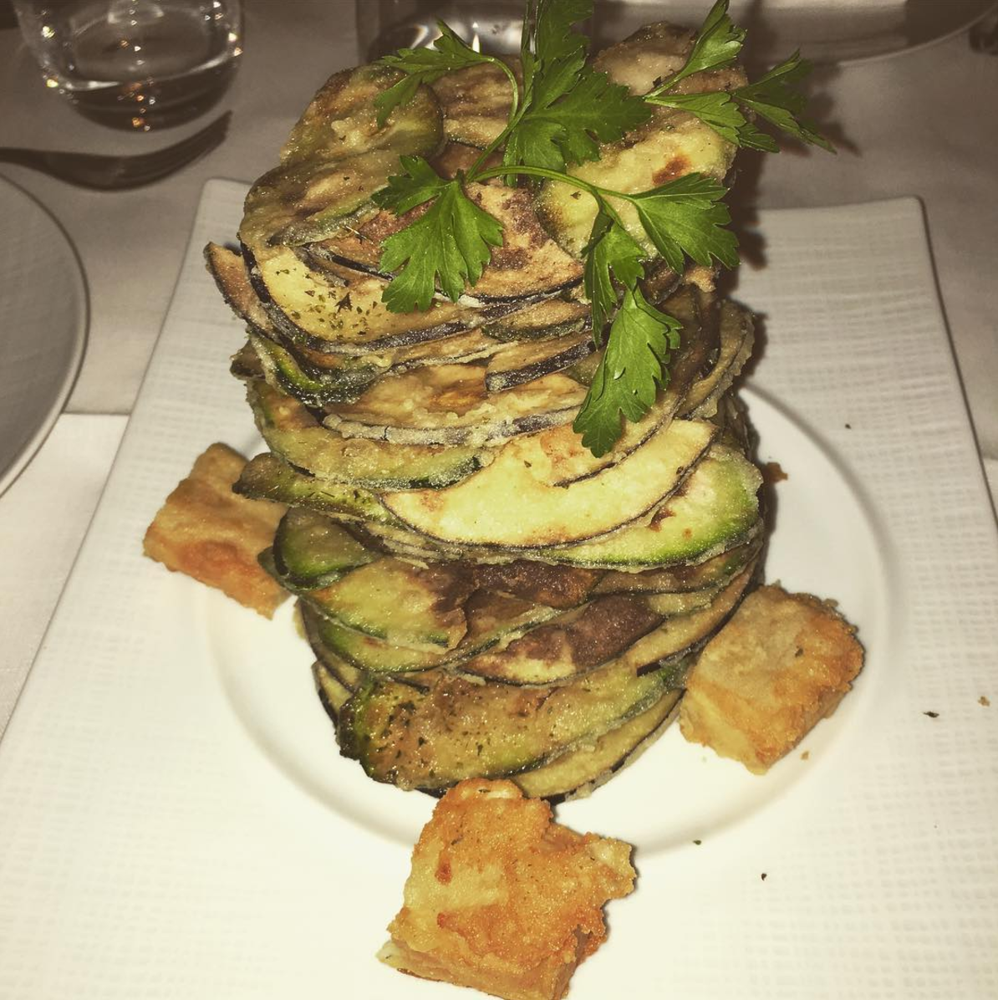
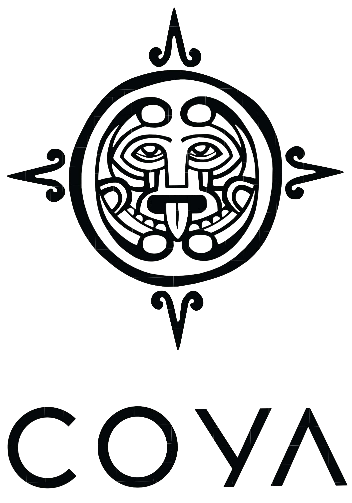
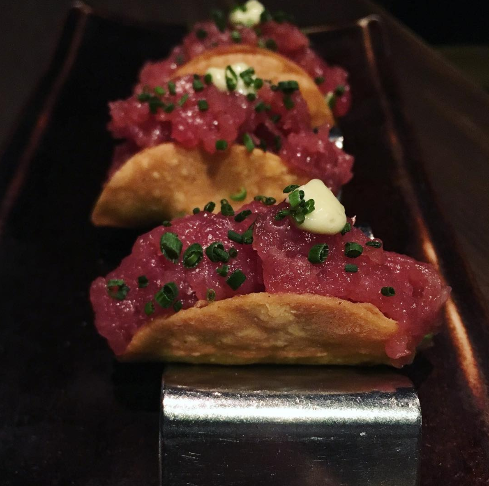

THE FOODIES 
RESTAURANTS
- Milos, London

Recognized as one of the finest Mediterranean seafood restaurants in the world, Estiatorio Milos was founded by acclaimed chef Costas Spiliadis who has made it an unparalleled culinary destination in Montreal, New York, Athens, Las Vegas, Miami and London.
Must have: Milos Special
 
- Coya, London
Coya was launched in London in 2012 and has since become one of the world’s most celebrated global Restaurant, Pisco lounge which is known for its unique Pisco Library, Members’ Club and an art showcase space as well as Coya has become famous for its continuous parties.
Must have: Tuna Tacos
 